File: 000840.gt.txt (if the image is defective, simply delete all Arabic text and the line will be excluded)
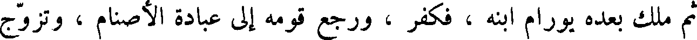
ثم ملك بعده يورام ابنه ، فكفر ، ورجع قومه إلى عبادة الأصنام ، وتزوج
File: 000841.gt.txt (if the image is defective, simply delete all Arabic text and the line will be excluded)
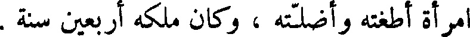
امرأةأطغته وأضلته ، وكان ملكه أربعين سنة .
File: 000842.gt.txt (if the image is defective, simply delete all Arabic text and the line will be excluded)
ثم ملك احزيا ، بعد أبيه ، فسلك سبيله ، وكان العشرة الأسباط قد اعتزلت،
File: 000843.gt.txt (if the image is defective, simply delete all Arabic text and the line will be excluded)
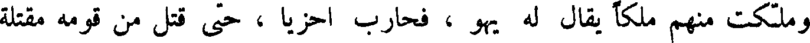
وملكت منهم ملكا يقال له يهو ، فحارب احزيا ، حتى قتل من قومه مقتلة
File: 000844.gt.txt (if the image is defective, simply delete all Arabic text and the line will be excluded)
عظيمة ، ثم سلط الله عليهم ملك سورية ، ففعل بهم مثل ذلك ؛ وكان ملك
File: 000845.gt.txt (if the image is defective, simply delete all Arabic text and the line will be excluded)
احزيا سنة واحدة .
File: 000846.gt.txt (if the image is defective, simply delete all Arabic text and the line will be excluded)
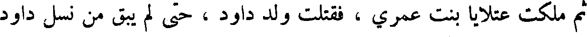
ثم ملكت عقلايا بنت عمري ، فقتلت ولد داود ، حتى لم يبق من نسل داود
File: 000847.gt.txt (if the image is defective, simply delete all Arabic text and the line will be excluded)
أحدا إلا غلام يقال له يواش ، وأخذته امرأة من بني عمه يقال لها يوشبع
File: 000848.gt.txt (if the image is defective, simply delete all Arabic text and the line will be excluded)
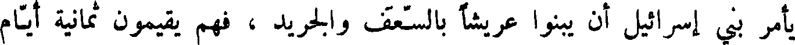
يأمر بني إسرائيل أن يبنوا عريشا بالسعف والجريد ، فهم يقيمون ثمانية أيام
File: 000849.gt.txt (if the image is defective, simply delete all Arabic text and the line will be excluded)
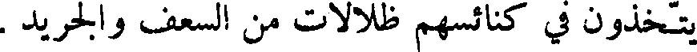
يتخذون في كنائسهم ظلالات من السعف والجريد .
File: 000850.gt.txt (if the image is defective, simply delete all Arabic text and the line will be excluded)
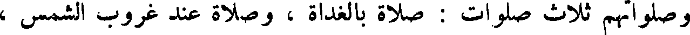
وصلواتهم ثلاث صلوات : صلاة بالغداة ، وصلاة عند غروب الشمس ،
File: 000851.gt.txt (if the image is defective, simply delete all Arabic text and the line will be excluded)
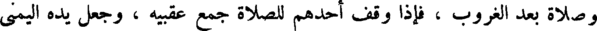
وصلاة بعد الغروب ، فإذا وقف أحدهم للصلاة جمع عقبيه ، وجعل يده اليمنى
File: 000852.gt.txt (if the image is defective, simply delete all Arabic text and the line will be excluded)
على كتفه اليسرى ، ويده اليسرى على كتفه اليمنى ، وهو مطرق ، يركع خمس
File: 000853.gt.txt (if the image is defective, simply delete all Arabic text and the line will be excluded)
ركعات لا يسجد فيهن ، ثم يسجد في الآخرة سجدة واحدة ، ويسبح بمزامير
File: 000854.gt.txt (if the image is defective, simply delete all Arabic text and the line will be excluded)
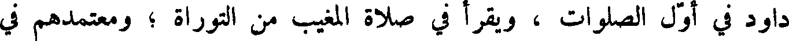
داود في أول الصلوات ، ويقرأ في صلاة المغيب من التوراة ؛ ومعتمدهم في
File: 000855.gt.txt (if the image is defective, simply delete all Arabic text and the line will be excluded)
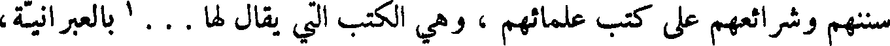
سننهم وشرائهم على كتب علمائهم ، وهي الكتب التي يقال لها ...1 بالعبرانية،
File: 000856.gt.txt (if the image is defective, simply delete all Arabic text and the line will be excluded)
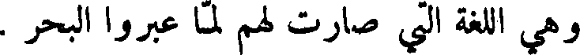
وهي اللغة التي صارت لهم لما عبروا البحر .
File: 000857.gt.txt (if the image is defective, simply delete all Arabic text and the line will be excluded)
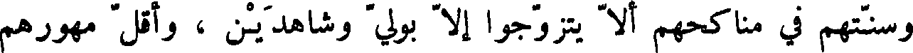
وسنتهم في مناكحهم إلا يتزوجوا ألا بولي وشاهدين ، واقل مهورهم
File: 000858.gt.txt (if the image is defective, simply delete all Arabic text and the line will be excluded)
للبكر مائتا درهم ، وللثيب مائة درهم بهذا الوزن لا يكون اقل منه ، والطلاق
File: 000859.gt.txt (if the image is defective, simply delete all Arabic text and the line will be excluded)
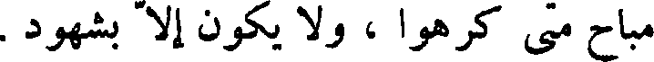
مباح متى كرهوا ، و لا يكون إلا بشهود .
File: 000860.gt.txt (if the image is defective, simply delete all Arabic text and the line will be excluded)
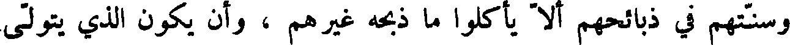
وسنتهم في ذبائحهم ألا يأكلوا ما ذبحه غيرهم ، وان يكون الذي يتولى
File: 000861.gt.txt (if the image is defective, simply delete all Arabic text and the line will be excluded)
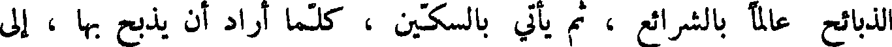
الذبائح عالما بالشرائع ، ثم يأتي بالسكين ، كلما أراد أن يذبح بها ، إلى
File: 000862.gt.txt (if the image is defective, simply delete all Arabic text and the line will be excluded)
الكاهن ، فإذا رضي حدها أطلق له الذبح بها ، و إلا أمره أن يحدها ، أو يأتي
File: 000863.gt.txt (if the image is defective, simply delete all Arabic text and the line will be excluded)
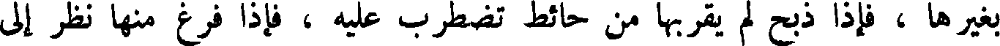
بغيرها ، فإذا ذبح لم يقربها من حائط تضطرب عليه ، فإذا فرغ منها نظر إلى
File: 000864.gt.txt (if the image is defective, simply delete all Arabic text and the line will be excluded)
الحلقوم ، فان وجده لم يرغ الغلصمة ، ووجد الذبح مستويا لم يؤكل حتى
File: 000865.gt.txt (if the image is defective, simply delete all Arabic text and the line will be excluded)
ينظر إلى الرئة ، فان وجد بها عيبا ، أو علة ، أو شقا ، أو بثرة ، أو ورما ،
File: 000866.gt.txt (if the image is defective, simply delete all Arabic text and the line will be excluded)
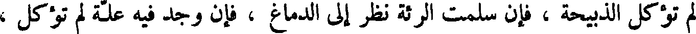
لم تؤكل الذبيحة ، فإن سلمت الرئة نظر إلى الدماغ ، فإن وجد فيه علة لم تؤكل ،
File: 000867.gt.txt (if the image is defective, simply delete all Arabic text and the line will be excluded)
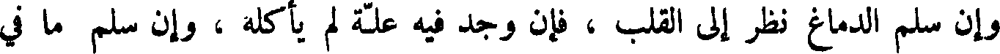
وان سلم الدماغ نظر إلى القلب ، فإن وجد فيه علة لم يأكله ، وان سلم ما في
File: 000868.gt.txt (if the image is defective, simply delete all Arabic text and the line will be excluded)
البطون والثرب من الشحم ، فلا يأكله ، ولا العروق ، واكل ما سوى ذلك .
File: 000869.gt.txt (if the image is defective, simply delete all Arabic text and the line will be excluded)
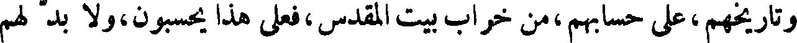
وتاريخهم،على حسابهم،من خراب بيت المقدس،فعلى هذا يحسبون،ولا بد لهم
To Save: `Ctrl+s`, make sure to choose `Webpage, complete`!